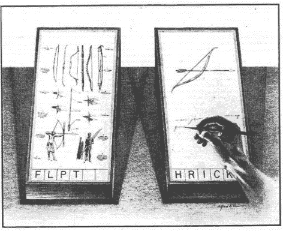

Audio-Visual In/Out
Пространство проектов, обучения и рефлексии. Развивается с 2025 года, вдохновлённый XXIIVV.
Изначально AVIO разрабатывался как вики-система, которая совмещала бы четыре вектора интереса для помощи в разработке видеоигр – центра этого пространства. Со временем это правило (разделение смыслов на четыре категории) отпало, и теперь это "просто" личный сайт, хранящий источники вдохновения, осколки переживаний и прочие артефакты человеческой жизни.
Внешний вид и наполнение часто меняется, обновляется, убирается, – напоминая эволюцию некоего организма.
Формально, AVIO можно назвать MEMEX'ом: "живым документом и архивом о том, где человек побывал, а также инструментом, который подсказывает, куда можно пойти". >
